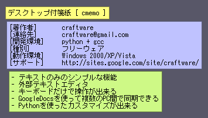
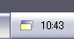
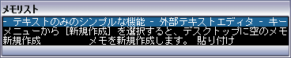
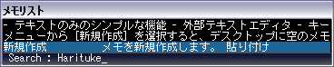
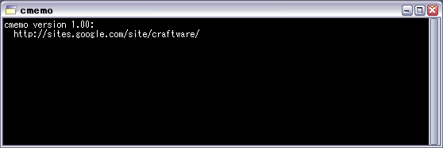

|
CraftMemo
|


|
|
CraftMemo
|
|
| 著作者: | craftware |
|---|---|
| 連絡先: | craftware@gmail.com |
| 開発環境: | Python + VisualC++2010 |
| 種別: | フリーウェア |
| 動作環境: | Windows XP/Vista/7/8 |
| Webサイト: | http://sites.google.com/site/craftware/ |
このソフトウェアは、デスクトップにメモを貼り付けるアプリケーションです。
特徴
- テキストのみのシンプルな機能
- 外部テキストエディタ
- キーボードだけで操作が出来る
- Pythonを使ったカスタマイズが出来る

このソフトウェアでは、以下のライブラリを使用しています。
- Python Programming Language
- http://www.python.org/
- Pillow
- https://github.com/python-imaging/Pillow
- C/Migemo
- http://www.kaoriya.net/
cmemo を起動すると、タスクトレイに付箋紙の形をしたアイコンが表示されます。
タスクトレイのアイコンを右クリックすると、メニューがポップアップします。
項目の名前 機能 新規作成 メモを新規作成します。 貼り付け クリップボードの内容からメモを新規作成します。 非表示 メモを全て一時的に非表示にします。 リスト メモ一覧ウインドウを表示します。 設定のリロード 設定ファイル(config.py)をリロードします。 設定の編集 設定ファイル(config.py)を編集します。 内部ログ cmemoの詳細なログ出力を有効または無効にします。 端末のクリア コンソールウインドウのログを消去します。 ヘルプ 説明書を開きます。 cmemoの終了 cmemoを終了します。 またメニューをホットキーでポップアップさせることが出来ます。 ホットキーは、標準では Ctrl-Shift-P に割り当てられていますが、config.py でカスタマイズすることが出来ます。
項目の名前 機能 新規作成 メモを新規作成します。 貼り付け クリップボードの内容からメモを新規作成します。 非表示 メモを全て一時的に非表示にします。 リスト メモ一覧ウインドウを表示します。 メニューから [新規作成] を選択すると、デスクトップに空のメモウインドウ が作成され、外部テキストエディタが起動します。 外部テキストエディタは、標準では、Windowsのメモ帳が割り当てられていますが、 config.py でカスタマイズすることが出来ます。
メニューから [リスト] を選択すると、メモ一覧ウインドウが表示されます。
メモ一覧ウインドウで F キーを押すと、メモのインクリメンタルサーチが 始まります。
タスクトレイのアイコンを左クリックすると、cmemo のコンソールウインドウ が表示されます。このウインドウには、cmemo 内蔵の Python インタプリタの 出力が表示されます。
メモを右クリックすると、メモのメニューがポップアップします。
項目の名前 機能 編集 メモを編集します。 コピー クリップボードにコピーします。 貼り付け クリップボードから貼り付けます。 色設定 メモの色を設定します。 一行表示 一行表示モードを切り替えます。 同期対象 DropBoxを使ったメモの同期対象に設定します。 削除 メモを削除します。 メモウインドウがアクティブになっている状態で、以下のショートカット キーを使用することが出来ます。
キー 機能 Ctrl-C クリップボードにコピーします。 Ctrl-V クリップボードから貼り付けます。 Ctrl-Z クリップボードからの貼り付けを取り消します。 Ctrl-T 一行表示モードを切り替えます。
cmemo はスクリプト言語 Python を内蔵しており、テキストエディタの設定や キーアサインを、Python スクリプトで記述することが出来ます。
cmemo を一度起動すると、インストールしたディレクトリに config.py という名前 の設定スクリプトが作られます。このファイルをテキストエディタで編集します。
config.py を編集するテキストエディタは何でもかまいませんが、Python のソース コードを色付で表示してくれるものを推奨します。
config.pyの全体の構造
config.py には、以下のように、configure() という名前の関数を定義します。 configure()の引数には、Desktop オブジェクトが渡され、この Desktop オブジェクト を操作することにより、テキストエディタやキーのカスタマイズをすることが出来ます。
configure関数の定義:
def configure(desktop):テキストエディタの設定
テキストエディタの設定例:
desktop.editor = u"notepad.exe"desktop.editor に、好きなテキストエディタのパスを設定します。
この設定は、メモを編集するときと、 設定メニューの [ config.py の編集 ] を選択したときに影響します。
ホットキーの設定
メニューを出すためのホットキーの割り当てを行うには、 以下のように desktop.setMenuHotKey を呼び出します。
ホットキーの割り当て例:
desktop.setMenuHotKey( ord('P'), MODKEY_CTRL|MODKEY_SHIFT )この例では、Ctrl-Shift-P を割り当てています。
デフォルトのメモウインドウの色の設定
以下のようにして、メモウインドウのデフォルト色を設定することが出来ます。
メモウインドウの色の設定例:
desktop.default_memo_color = ( 255, 255, 128 )R(赤) G(緑) B(青) の3原色それぞれに関して、0-255 を与えます。 この例では、黄色を設定しています。
(加筆予定)
cmemoでは、DropBoxを使って、複数のPC間でメモを同期することが出来ます。
cmemoでは、メモ一覧ウインドウのインクリメンタルサーチで、Migemoを使用することが 出来ます。
Migemoを使用すると、IMEをOFFのままで、アルファベット入力で日本語を検索することが 出来ます。
Migemo の入力方法の詳細については、Migemoの本家サイト ( http://www.kaoriya.net/software/cmigemo/ ) を参照してください。
Migemoを使用する場合は、別途辞書ファイルを入手し、以下のように配置しておく必要があります。
- (cmemoのインストール場所)/dict/migemo-dict
- (cmemoのインストール場所)/dict/han2zen.dat
- (cmemoのインストール場所)/dict/zen2han.dat
- (cmemoのインストール場所)/dict/hira2kata.dat
- (cmemoのインストール場所)/dict/roma2hira.dat
辞書ファイルは、C/Migemo のバイナリパッケージに含まれています。
http://cmigemo.googlecode.com/files/cmigemo-default-win64-20110227.zip